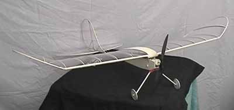

From: Johan Bjurling, johanbju@hem1.passagen.se
Hi Thayer!
I have now signed up to the new (?) mailing list with indoor/slow fly radio control.
Me, and a couple of friends have ordered quite a few Wespe kits (eleven to be exact!) from the German company "WES technic" Mine is now finished and I have flown it outside my house, in the street lamps. In the middle of the night. This was my first Slowflyer, and I'm sure there will be more. I'm planning a two-motor version...
WES homepage:http://www.idnet.de/homepage/scholl/
My plane weighs 100 grammes. (3,5 ozs?) Using WES 3,5 grammes servos. I can climb about 45 degrees. Flying time with a 7 cell 50mah pack is 4-5 mins. Attached you'll find a pic of my friend's Wespe. I was foolish enough to try to fly in far too windy conditions, so mine didn't make it to the camera... (It was fixed in half an hour though)
Keep in touch!
Greetings; Johan Bjurling, Sweden
johanbju@hem1.passagen.se
Johan has posted a web site with some of his other models. It is available in both Swedish and English. Look for his tips on building a Wespe. While specifically tailored to the kit, there is good info about building light and slow models.
Copyright 1998, Thayer Syme. All rights reserved